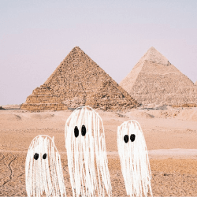
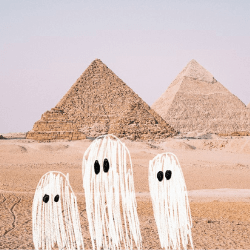

Not the end nació en la década de 1980 en Nueva York, organizado por un grupo de antiguos fallecidos que deseaban alivianar la pesada carga del gran afluente de recientes Muertes No Cruzadas (MNC): personas fallecidas que no han podido cruzar al otro lado.
La idea era disfrutar de lo que había sido negado en vida: la libertad del goce.
Durante una semana, las calles se colmaron de fantasmas, que recorrieron la ciudad bajo el lema de We're all equal in death.
Desde entonces, el festival Not the end se celebra una vez al año en alguna ciudad del mundo, buscando mantener vivo el espíritu festivo tras la muerte, y respetando el lema original de igualdad e inclusión.


 
